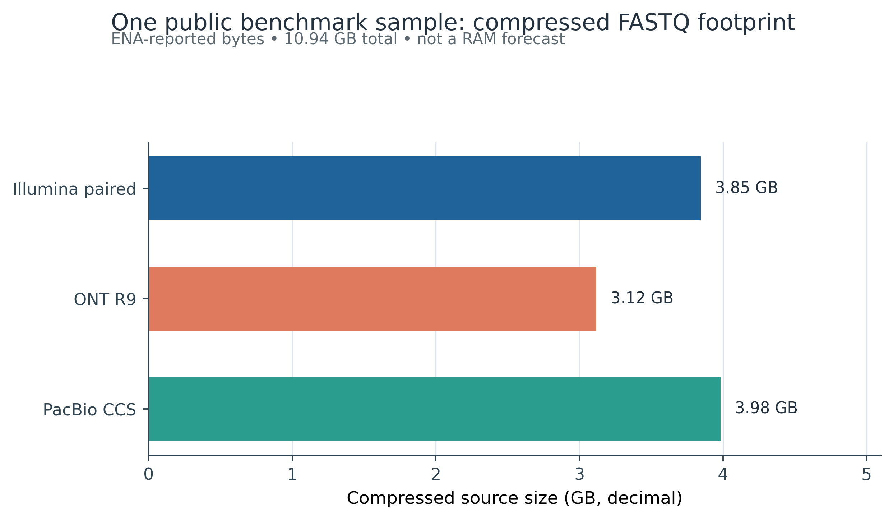
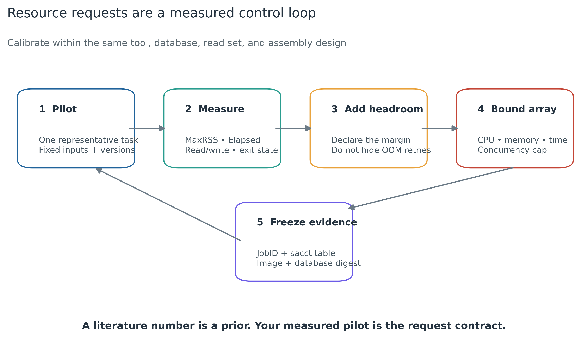
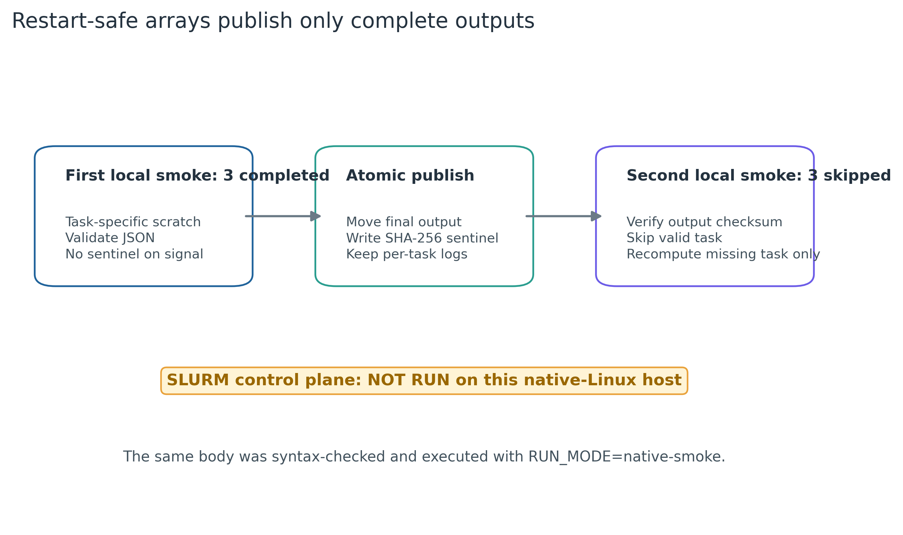

options(timeout = 600)
base_url <- "https://raw.githubusercontent.com/petemeng/metagenomics-best-practices/e219a2cd01609cc208a89e291cbd363ed7f2fbd8/"
files <- read.delim(paste0(base_url, "examples/10/files.tsv"))
for (i in seq_len(nrow(files))) {
path <- files$path[i]
dir.create(dirname(path), recursive = TRUE, showWarnings = FALSE)
if (!file.exists(path)) {
download.file(paste0(base_url, files$source[i]), path, mode = "wb")
}
}算力现实：内存、磁盘、HPC、云、Apptainer 与 SLURM
学习目标：把“机器够不够”拆成 CPU、RAM、wall time、scratch、共享存储、数据库、网络与并发八个可审计量；用代表性任务实测峰值资源；决定本地工作站、机构 HPC 或合规云；用 Apptainer 固定运行环境；用 SLURM job array、任务级 scratch、原子输出和 checksum sentinel 让失败后只补跑缺失任务。
真实数据：盘点 Meslier 等 71-strain MOCK1 的同一样本SAMEA14435832(Meslier 等 2022年)。ENA 报告的 Illumina paired、历史 ONT R9 与 PacBio CCS 四个压缩 FASTQ 合计10,944,966,814bytes；本地冒烟读取各平台前 5,000 条真实 records 的 15,000 行固化指标。三种平台用于资源合同示范，不会被合并成一个生物学分析输入。
本章验证资源：约 2 核、4 GB RAM、5 GB 临时空间、1–2 分钟；实际本地任务远低于这个申请。完整 read profiling、组装、分箱、GTDB-Tk 或大型数据库任务不能沿用该 smoke 配置，必须在同一工具、数据库、参数和代表性输入上重新测量。没有服务器时，可在个人电脑完成 manifest、少量 reads 冒烟和下游表分析，把组装及 genome-resolved 任务送到机构 HPC；云端只用于预算、合规、持久化和失败恢复均已设计好的任务。
提示并发上限应由最紧缺的资源决定
用真实输入测峰值内存、磁盘和耗时；并发数应服从资源上限，失败续跑要检查输出完整性。
先测小规模任务，再申请计算资源
Zhang 等对 metagenome assemblers 的系统比较在 Figure 5 同时报告 real time 与 resident set size（RSS）；同一批 CAMI 数据上，不同 assembler 的耗时和峰值内存差异很大，部分组合超过服务器内存上限，另有运行超过 7 天 (Zhang 等 2023年)。这张图最重要的结论不是“买多少 GB”，而是：
- 资源消耗是 tool × version × input × parameter × hardware 的联合结果；
- 运行成功所需 RAM 与压缩 FASTQ 大小不是固定倍数；
- co-assembly、长读组装和多轮 polishing 会改变计算图，不能从 read profiling 外推；
- Methods 应报告实测
MaxRSS、Elapsed、CPU、I/O 和失败状态，而不是只写服务器型号。
本次重绘先展示可直接核对的输入事实。一个公开 benchmark sample 的四个压缩 FASTQ 共 10.945 GB，其中 Illumina paired 为 3.845 GB、历史 ONT R9 为 3.117 GB、PacBio CCS 为 3.983 GB。

随后把资源申请变成闭环：代表性 pilot → 计量 → 显式余量 → 有上限的并发 → 保存 accounting 与环境指纹。

并发上限应由最紧缺的资源决定
CPU 足够不代表能同时运行所有样本：每个任务都加载数据库时，内存或共享存储可能先达到上限。先测代表性任务的峰值，再为波动和临时文件留余量；压缩 FASTQ 大小既不是解压空间，也不是组装内存的固定倍数。任务数组的并发限制应反映这些实测约束。
失败恢复还要区分“文件存在”与“结果完整”。进程被终止后留下的半个输出不能跳过重跑；应在成功检查后才生成完成标记，并把临时输出与正式结果分开。这里本地运行成功的任务不等于 SLURM 或 Apptainer 已在目标集群验证，调度器与容器边界需要各自的实际证据。
下载本例数据与分析代码
数据与代码清单列出了本例的输入表、分析脚本和环境文件（约 4.4 MiB）。本清单不含原始 FASTQ 或大型数据库；是否需要它们取决于下文的分析起点。清单中的已计算结果仅供核对；读取结果表不等于重新运行统计模型或上游工具。
在新建文件夹中运行下面的 R 代码，下载完成后即可按正文中的相对路径读取文件。需要核验文件版本时，可使用带完整性检查的下载脚本。
本地验证、容器运行和调度运行是三个证据平面
2026-07-19 的验证结果是：
| Evidence plane | Observed | Status | 可以支持的结论 |
|---|---|---|---|
| Native Linux host | Ubuntu 22.04.5, x86_64, 72 logical / 36 physical cores, ext4 | PASS | 本地执行层可盘点、可运行小任务 |
| Real-data task body | 3 × 5,000 records completed | PASS | 输入映射、scratch、输出校验能工作 |
| Resume contract | second run skipped 3/3 valid outputs | PASS | checksum sentinel 能阻止重复计算 |
| Current Apptainer CLI | absent | NOT RUN | 不能声称 Apptainer 已在本机执行 |
| Legacy Singularity | 3.7.2; SIF build passed, exec failed | EXPECTED FAIL | 暴露旧安装的 runtime 边界 |
SLURM sbatch / sacct |
absent | NOT RUN | 不能声称作业进入过调度器 |

native-smoke 分支；SLURM control plane 仍需在目标集群验收。
重要本地跑过 shell script，不等于 SLURM 已验证
#SBATCH 行在普通 Bash 中只是注释。只有 sbatch 返回 JobID、任务进入 partition、sacct 能给出 State/ExitCode/MaxRSS/Elapsed 等记录，才有 scheduler 证据。本地语法检查和任务 body 冒烟很有价值，但必须保留 NOT RUN 标签。
先确认系统环境与版本来源
环境配置与完整运行说明
最低命令
for cmd in bash awk sha256sum python3 /usr/bin/time; do
command -v "$cmd" || exit 1
done本地复核使用第 09 篇建立的固定环境：
conda run -n metagenome-platform-smoke-2026.07 \
python --version在目标集群先查询 site-provided modules，不要照抄别的集群 module 名称：
module spider apptainer 2>&1 | head -n 40
module spider slurm 2>&1 | head -n 40
apptainer version
sinfo --version固定真实输入
data/small/
├── 08-ena-fastq-sources.tsv
├── 08-read-prefix-metrics.tsv
├── 10-job-array.tsv
├── 10-runtime-contract.tsv
├── 10-container-smoke.log
└── 10-data-NOTICE.txt
scripts/
├── article10_task.py
├── 10_slurm_array_smoke.sh
└── validate_article10_compute.py关键输入 SHA-256：
08-ena-fastq-sources.tsv
96638ae0d16ce5953760b596887c9f8f443c1dc33e0f82bef2e6ac040e69d962
08-read-prefix-metrics.tsv
6c426e0c89a95b1c1cc7ec631629e3635a7fd83c61c90d4086801b28495b5a61
10-job-array.tsv
368baec61944a605305723971f0442f8fc568ce6f7107452d44299e4cb76776f
10-runtime-contract.tsv
dad2c5154b3e1f703bab76698adc04607668a4ba0bcc136b53191143cab62e6a
10-container-smoke.log
aeb469f3084bb8062d8c9538a8585deb0aa6ec90db1ff3f7563e5ac1662d6750
10-data-NOTICE.txt
be50d3a7fb4432c20c198452c73328d5109efac72354de5073c559cb921475e6检查：
sha256sum \
data/small/08-ena-fastq-sources.tsv \
data/small/08-read-prefix-metrics.tsv \
data/small/10-job-array.tsv \
data/small/10-runtime-contract.tsv \
data/small/10-container-smoke.log \
data/small/10-data-NOTICE.txt内联出版作图函数
验证脚本包含完整图形实现。单独从结果表作图时，可复用以下 Python 接口：
from pathlib import Path
import random
import matplotlib.pyplot as plt
random.seed(20260719)
pal_pub = {
"blue": "#20639B",
"teal": "#2A9D8F",
"orange": "#E9A23B",
"red": "#C44536",
"purple": "#6C5CE7",
"ink": "#24323F",
}
def scale_color_pub(levels):
return [pal_pub[level] for level in levels]
def scale_fill_pub(levels):
return [pal_pub[level] for level in levels]
def theme_pub(ax):
ax.spines["top"].set_visible(False)
ax.spines["right"].set_visible(False)
ax.grid(axis="x", color="#DDE5EA", linewidth=0.7)
ax.set_axisbelow(True)
return ax
def save_pub(fig, stem):
stem = Path(stem)
fig.savefig(stem.with_suffix(".pdf"), bbox_inches="tight")
fig.savefig(stem.with_suffix(".png"), dpi=350, bbox_inches="tight")
fig.savefig(
stem.with_suffix(".tiff"),
dpi=350,
bbox_inches="tight",
pil_kwargs={"compression": "tiff_lzw"},
)先核对真实输入 footprint
一次作业至少有八个资源维度
| 维度 | 常用观测 | 申请或约束 | 常见误判 |
|---|---|---|---|
| CPU | AllocCPUS, TotalCPU |
--cpus-per-task |
核数翻倍就必然快一倍 |
| RAM | MaxRSS |
--mem 或 --mem-per-cpu |
压缩 FASTQ × 固定倍数 |
| Wall time | Elapsed |
--time |
把 CPU time 当 wall time |
| Scratch | peak temporary bytes | $SLURM_TMPDIR quota |
只算最终结果 |
| Shared storage | input/output/database bytes | project quota | 把 scratch 当永久存储 |
| I/O | read/write bytes, throughput | array concurrency | 只看 CPU utilization |
| Network | transfer size/retry/checksum | staging window | 用链路标称带宽算交付时间 |
| Scheduler | queue、partition、limits | array cap/QoS | 一次提交无上限数组 |
GPU 是第九个维度，但不是 shotgun workflow 的默认答案。只有工具明确支持并经真实任务证明加速、显存足够、CPU/I/O 不成为瓶颈时才申请 GPU。
import csv
from collections import defaultdict
path = "data/small/08-ena-fastq-sources.tsv"
grouped = defaultdict(int)
with open(path, encoding="utf-8", newline="") as handle:
for row in csv.DictReader(handle, delimiter="\t"):
grouped[row["PlatformKey"]] += int(row["ENABytes"])
for platform in ("Illumina", "ONT", "PacBio"):
print(platform, grouped[platform], grouped[platform] / 1e9)
assert grouped["Illumina"] == 3_845_199_421
assert grouped["ONT"] == 3_117_261_341
assert grouped["PacBio"] == 3_982_506_052
assert sum(grouped.values()) == 10_944_966_814这里的 Illumina 数值含 R1 + R2；另外两种平台各一条单端/long-read FASTQ。它们来自同一样本的跨平台 benchmark，不应当相加后送给同一个 assembler。
忠实复现资源 benchmark，但不搬运数字
Zhang 等 Figure 5 证明 assembler 资源差异显著。今天复现时应保留：
- dataset、read type、depth 与 complexity；
- assembler/version/parameters；
- hardware、threads、memory limit、wall-time limit；
- successful、OOM、timeout 与 skipped combinations；
- assembly quality 与 resource cost 同时比较。
不能从论文的一台服务器复制“推荐 RAM”，再用于不同数据库、co-assembly 或长读数据。
盘点当前执行层，不泄露路径
压缩输入大小只回答传输和最低存储
本次 10.945 GB 是 compressed source footprint。真正运行时还可能同时存在：
compressed FASTQ
├── validated/staged copy
├── decompression stream or temporary FASTQ
├── host-depleted reads
├── alignment / name-sorted BAM
├── assembly graph + contigs
├── mapping indexes and depth matrices
├── bins / MAGs / annotations
└── container + database cache因此 scratch 预算应逐项相加：
\[ S_{\text{request}} = (S_{\text{inputs}} + S_{\text{intermediates,peak}} + S_{\text{outputs}} + S_{\text{cache}})\times (1+h_S) \]
h_S 是显式余量，不是隐藏的“经验倍数”。中间产物峰值必须由 pilot 或工具日志获得；不知道时就写 unknown 并先跑子集，不能拿 FASTQ 大小直接代入组装内存。
uname -srm
lscpu | sed -n '1,20p'
free -b
df -BT .
command -v apptainer || true
command -v singularity || true
command -v sbatch || true
command -v sacct || true公开报告保留 OS、kernel、architecture、logical/physical cores、total memory、filesystem type 和容量即可；删除 hostname、用户名、绝对项目路径、proxy、token 与内部 partition 名。
一次本地盘点观察到 Ubuntu 22.04.5、x86_64、72 logical / 36 physical cores、约 1 TiB total memory 与 ext4。它只描述验证机，不是读者的最低配置。
先校准单样本，再决定 co-assembly
单样本 assembly 通常能形成天然 job array；co-assembly 把多个样本汇入一个更大的 graph，可能提高目标群体的 coverage，也会增加 RAM、I/O 和失败成本。是否 co-assemble 是生物学设计与算力设计共同决定的，不是“服务器大就全混”。
nf-core/mag 的当前文档同样把 individual assembly 与 co-binning/co-assembly 分开，并为 retryable failure 提供资源递增重试 (nf-core contributors, 不详)。自动重试仍需保存每次 attempt 的申请值和 exit state。
从旧 Singularity 升级到当前 Apptainer
本机旧 Singularity 能转换 SIF，却不能执行，说明“命令存在”不是验收。目标集群应由管理员提供受支持的 Apptainer module，并至少验证：
apptainer version
apptainer inspect --json image.sif
apptainer exec --cleanenv image.sif tool --version
apptainer exec --cleanenv --bind ... image.sif real-data-smokeApptainer 安全修复应用于最新 release；生产集群应跟踪官方 security advisories，而不是永久冻结一个无维护 runtime (Apptainer contributors, 不详).
注意坑 2：只写服务器有多少内存，不写任务申请多少
Methods 需要 node/partition context、--mem、threads、wall time、MaxRSS 和 exit state。整机 1 TiB 不代表你的 job 获得了 1 TiB。
运行真实数据与作业约定检查
为什么共享 HPC 常用 Apptainer
Apptainer 源于面向 shared HPC 的容器模型：运行时默认保持宿主用户身份，使用单文件 SIF，适合 scheduler 管理的节点，不要求每个用户启动 Docker daemon (Kurtzer 等 2017年)。当前官方 release 为 1.5.2（2026-06-23）。
容器固定了 user-space 软件，却没有固定：
- host kernel、CPU 指令集、GPU driver；
- scheduler、filesystem 与 site policy；
- bind-mounted 数据库内容；
- OCI tag 指向的未来内容；
- 线程数、随机种子与分析参数。
所以应同时记录 OCI digest、生成后 SIF SHA-256、Apptainer version、数据库 release/checksum 和实际命令。
mkdir -p .cache/matplotlib
MPLCONFIGDIR="$PWD/.cache/matplotlib" \
conda run -n metagenome-platform-smoke-2026.07 \
python scripts/validate_article10_compute.py \
--project-root . \
--output-dir results/10-computing-hpc-cloud \
--figure-dir figures输出：
results/10-computing-hpc-cloud/
├── host-inventory.tsv
├── input-footprint.tsv
├── probe-telemetry.tsv
├── scheduler-template-audit.tsv
├── container-runtime-audit.tsv
├── resume-audit.tsv
├── compute-audit.tsv
├── compute-summary.json
├── compute-validation.log
└── array-output/
├── 01-illumina.json{,.done}
├── 02-ont.json{,.done}
└── 03-pacbio.json{,.done}
figures/
├── 10-input-resource-budget.{pdf,png,tiff}
├── 10-resource-control-loop.{pdf,png,tiff}
└── 10-restart-safe-array.{pdf,png,tiff}验收摘要：
{
"status": "passed",
"validation_scope": "native-linux-local-smoke",
"performance_scope": "workflow-plumbing-smoke-not-assembler-benchmark",
"source_compressed_bytes": 10944966814,
"array_task_count": 3,
"first_run_completed": 3,
"second_run_skipped": 3,
"metric_rows_validated": 15000,
"container": {
"recommended_apptainer_release": "1.5.2",
"local_apptainer_version": "NOT_FOUND",
"local_singularity_version": "3.7.2",
"legacy_sif_exec": "EXPECTED_FAIL"
},
"scheduler": {
"slurm_control_plane_validated": false,
"template_bash_syntax_validated": true,
"template_local_body_validated": true
}
}workflow -resume 不是永久证据
Nextflow/nf-core 的 -resume 依赖 work/ cache 与 input/process hash (nf-core contributors, 不详)。删除 work directory、修改输入或命令会触发重算。最终发布仍要把关键产物、版本、参数、checksums 和 acceptance 提取到独立结果区；不能把临时 cache 当归档。
注意坑 1：把 compressed GB 当作 RAM 公式
压缩率、streaming、index、graph 和数据库内存模型各不相同。FASTQ bytes 只能先约束传输和存储，RAM 要用同一工具 pilot 的 MaxRSS 校准。
注意坑 4：工具 threads 大于 SLURM_CPUS_PER_TASK
这会 oversubscribe 节点并污染 benchmark。让工具读取 SLURM_CPUS_PER_TASK，并在日志中打印实际 thread 参数。
注意坑 6：在 shared home 解压数据库或放 container cache
home quota 常小且 metadata 性能有限。查询项目、scratch 与 cache policy，把大型数据库放管理员批准的共享路径。
用 GNU time 做本地 pilot
RAM 和 wall time 从代表性任务校准
对同一工具合同，初始申请可写成：
\[ M_{\text{request}} = \lceil M_{\text{peak,pilot}}\times(1+h_M)\rceil \]
\[ T_{\text{request}} = \lceil T_{\text{pilot}}\times r_{\text{scale}}\times(1+h_T)\rceil \]
其中：
M_peak,pilot是MaxRSS，不是虚拟内存；r_scale只在输入复杂度、参数、线程和数据库相近时估计；h_M、h_T要写进资源合同；- OOM 或 timeout 后的升级请求与重试次数要进入日志。
如果 pilot 是 1/20 reads，不能默认 assembly 时间和 RAM 都线性放大 20 倍。de Bruijn graph、重复序列、群落复杂度和 coverage 会造成非线性。
最小命令：
/usr/bin/time -v python3 scripts/article10_task.py \
--metrics data/small/08-read-prefix-metrics.tsv \
--platform Illumina \
--run-accession ERR9765746 \
--expected-rows 5000 \
--seed 20260719 \
--output /tmp/illumina-smoke.json重点字段：
Elapsed (wall clock) time
Maximum resident set size (kbytes)
File system inputs
File system outputs
Exit status本地一次三任务实测均低于 1 秒，MaxRSS 约 18 MiB。这个数字只证明 4.6 MB 固化表的 task plumbing，不代表 10.945 GB FASTQ，更不代表 assembly。
在 SLURM 上提交有上限的 array
核数、线程、任务和数组不能混用
典型单进程多线程工具：
--ntasks=1
--cpus-per-task=16
tool --threads "$SLURM_CPUS_PER_TASK"三个独立样本并不是 --ntasks=3 的同一个并行程序，而通常是三个 array elements。并发上限取四个瓶颈的最小值：
\[ C_{\max} = \min\left( \left\lfloor\frac{M_{\text{usable}}}{M_{\text{task}}}\right\rfloor, \left\lfloor\frac{CPU_{\text{usable}}}{CPU_{\text{task}}}\right\rfloor, \left\lfloor\frac{S_{\text{usable}}}{S_{\text{task}}}\right\rfloor, C_{\text{scheduler}} \right) \]
--array=1-100%8 的 %8 是 I/O 与公平性合同，不只是防止内存爆掉。
本地、HPC 与云的选择依据
| 场景 | 优先平台 | 原因 | 先确认什么 |
|---|---|---|---|
| 小型表分析、图形、少量 read smoke | Linux/WSL2 workstation | 反馈快、无需排队 | RAM、备份、Linux filesystem |
| 多样本 profiling、组装、分箱、大数据库 | institutional HPC | 大内存节点、共享数据库、scheduler | partition、quota、scratch、module |
| 受控人源数据 | approved institutional platform | 权限、审计、数据驻留 | DUA/IRB/访问控制 |
| 短期弹性大内存、可中断批处理 | compliant cloud | 按需扩缩 | 全生命周期预算、持久化、egress |
| co-assembly / 超大长读组装 | calibrated HPC/cloud | 单任务可能需要大内存与长 wall time | 代表性 pilot、checkpoint、配额 |
云端 Spot/抢占式实例只适合可恢复工作。AWS 的官方文档说明 Spot interruption notice 通常只有两分钟且为 best effort (Amazon Web Services, 不详)；因此“价格更低”不能替代任务级 checkpoint、持久化输出和中断演练。本文不固定任何云价格：region、机型、磁盘、快照、对象存储、egress 与折扣会变化，提交前应生成带日期的成本清单。
SLURM 负责资源与状态，不负责科学正确性
SLURM sbatch 接受 CPU、memory、time 和 array 请求；job arrays 用 %A/%a 区分主 JobID 和 task ID (SchedMD, 不详-a, 不详-c)。sacct 可输出 State、ExitCode、MaxRSS、Elapsed、MaxDiskRead 和 MaxDiskWrite 等字段 (SchedMD, 不详-b)。
但 scheduler 不知道：
- 输入 checksum 是否正确；
- R1/R2 是否同步；
- output 是否完整；
- 数据库是否匹配 Methods；
- 一个 exit 0 的空表是否合理。
这些必须由任务 body 的验收条件补齐。
先建立日志目录；SLURM 在打开 --output 前不会替你创建它：
mkdir -p logs results/10-computing-hpc-cloud/array-output
bash -n scripts/10_slurm_array_smoke.sh生产模式必须提供固定 SIF 及其本地 SHA-256：
export PROJECT_ROOT="$PWD"
export RUN_MODE=container
export APPTAINER_IMAGE="$PWD/containers/metagenome-tools.sif"
export APPTAINER_IMAGE_SHA256="<sha256-of-the-exact-sif-file>"
sbatch scripts/10_slurm_array_smoke.sh模板的关键头部：
#!/usr/bin/env bash
#SBATCH --job-name=mg-compute-smoke
#SBATCH --array=1-3%3
#SBATCH --ntasks=1
#SBATCH --cpus-per-task=2
#SBATCH --mem=4G
#SBATCH --time=00:10:00
#SBATCH --output=logs/10-smoke-%A_%a.out
#SBATCH --error=logs/10-smoke-%A_%a.err
#SBATCH --signal=B:USR1@120
set -euo pipefail1-3%3 只对应当前三条真实 prefix 任务。换成自己的样本后，数组上限应与任务表行数一致，并根据 memory、CPU、scratch、I/O 和 site limit 重新决定 %N。
CPU efficiency 低不一定是“核申请少了”
近似指标：
\[ E_{CPU} = \frac{TotalCPU}{Elapsed\times AllocCPUS} \]
低效率可能来自：
- 单线程阶段；
- shared filesystem I/O；
- gzip 解压；
- database random access；
- thread oversubscription；
- 等待其他 pipeline process；
- NUMA 或 memory bandwidth。
先 profile，再增加 threads。过量核心会延长排队、浪费配额，还可能让多个 array tasks 同时压垮存储。
注意坑 3：同时使用 –mem 与 –mem-per-cpu
二者语义不同且在 SLURM 中互斥。单进程多线程工具通常更容易用 --mem=<per-node total> 表达；以所在集群配置为准。
注意坑 5：array 没有 %N 并发上限
大量任务可能同时读数据库或写共享 filesystem。并发上限应同时满足 RAM、CPU、scratch、I/O 与 site policy。
任务内使用 scratch、原子移动和 sentinel
核心模式：
set -euo pipefail
task_id="${SLURM_ARRAY_TASK_ID:?}"
task_scratch="${SLURM_TMPDIR}/task-${SLURM_JOB_ID}-${task_id}"
mkdir -p "$task_scratch"
cleanup() {
rm -rf "$task_scratch"
}
on_signal() {
echo "Interrupted; no final sentinel written" >&2
exit 99
}
trap cleanup EXIT
trap on_signal USR1 TERM INT
# 1. stage input
# 2. run in task-specific scratch
# 3. validate the complete output
# 4. move atomically
tmp_final="${final_json}.tmp.${SLURM_JOB_ID}.${task_id}"
cp "$scratch_json" "$tmp_final"
mv "$tmp_final" "$final_json"
# 5. sentinel comes last
final_sha="$(sha256sum "$final_json" | cut -d ' ' -f 1)"
printf '%s %s\n' "$final_sha" "$(basename "$final_json")" > "${final_json}.done"重跑前：
expected_sha="$(cut -d ' ' -f 1 "${final_json}.done")"
observed_sha="$(sha256sum "$final_json" | cut -d ' ' -f 1)"
[[ "$expected_sha" == "$observed_sha" ]] && exit 0存在结果但 checksum 不匹配时必须停止审计，不能覆盖后假装恢复成功。
scratch 需要峰值计量和清理策略
优先使用 site-provided $SLURM_TMPDIR。它通常快，但可能在 job 结束后自动删除。输入先校验再 stage；输出验证后再搬回共享项目区。trap cleanup EXIT 只清理任务私有目录，不能对共享 scratch 根目录做递归删除。
容器与数据库分离
镜像中放工具和轻量 runtime；MetaPhlAn、Kraken2、GTDB、CheckM2、CARD 等大数据库放版本化共享路径。容器命令显式 bind database，并记录：
container URI/digest
SIF SHA-256
database name/release
database manifest/checksum
bind source/destination
tool-reported database version仅锁 image 不锁 database，仍无法复现生物学结果。
注意坑 8：容器里能看到宿主所有环境变量
使用 --cleanenv，显式传递必要变量，限制 bind paths。proxy、token、LD_LIBRARY_PATH 和用户 site packages 都可能污染结果或泄露信息。
注意坑 9：程序一启动就写 .done
sentinel 必须在输出完成、结构验收、checksum 生成之后最后写入；中断任务不得留下“完成”标记。
注意坑 10：partial output 存在就跳过
跳过条件应是 output + acceptance + matching checksum sentinel。只有文件名存在不代表结果完整。
固定 OCI digest，再记录 SIF artifact hash
当前 smoke payload：
OCI_REF='docker://alpine@sha256:eafc1edb577d2e9b458664a15f23ea1c370214193226069eb22921169fc7e43f'
apptainer pull containers/alpine-3.22.1-amd64.sif "$OCI_REF"
sha256sum containers/alpine-3.22.1-amd64.sif \
> containers/alpine-3.22.1-amd64.sif.sha256
apptainer version运行时只绑定必要路径：
apptainer exec \
--cleanenv \
--bind "$PWD:/work:ro,$SLURM_TMPDIR:/scratch:rw" \
--pwd /work \
containers/alpine-3.22.1-amd64.sif \
/bin/sh -c 'cat /etc/alpine-release'OCI digest 标识上游 payload；SIF SHA-256 标识你实际运行的文件。不同时间重新转换 OCI → SIF 时，SIF build metadata 可能改变，因此不能先假定新 SIF 必然与旧 SIF 字节相同。
警告本机容器实测边界
本机只有 legacy Singularity 3.7.2。一次 singularity pull alpine:3.22.1 生成了 3,727,360-byte SIF，SHA-256 为 5dd8b9d8…b76902d8；singularity exec --cleanenv 随后因本地安装缺少 setuid/unprivileged runtime 支持而失败。该结果记录为 EXPECTED_FAIL。固定 OCI payload 另由 Docker digest smoke 验证为 Alpine 3.22.1，但这不构成 Apptainer 运行证据。
注意坑 7：用 latest tag，不保存 digest
同一个 tag 以后可能指向不同内容。固定 OCI digest；生成 SIF 后再记录实际 artifact SHA-256。
提交后用 sacct 反推下一次申请
JOB_ID="<job-id-returned-by-sbatch>"
sacct -j "$JOB_ID" -X \
--format=JobID,JobName%24,State,ExitCode,AllocCPUS,ReqMem,MaxRSS,Elapsed
sacct -j "$JOB_ID" \
--format=JobID,State,ExitCode,MaxRSS,Elapsed,TotalCPU,MaxDiskRead,MaxDiskWrite同时保存：
scontrol show job "$JOB_ID" > "results/job-${JOB_ID}-scontrol.txt"
sacct -j "$JOB_ID" --json > "results/job-${JOB_ID}-sacct.json"若 cluster 不支持 sacct --json，用固定 --parsable2 --noheader --format=... 输出 TSV，并记录 SLURM version。MaxRSS 为空可能是 accounting plugin/site configuration 的限制，不等于内存为 0。
把 MaxRSS 放回 job step 语义
SLURM accounting 可能同时出现：
12345
12345.batch
12345.extern
12345_7
12345_7.batch报告哪个 record 的 MaxRSS 必须写清。多进程程序还要确认 site 的聚合方式；不要把一个 step 的最大 task RSS 误写成整节点总内存。
只重试可恢复故障
| 故障 | 是否自动重试 | 先做什么 |
|---|---|---|
| transient node failure | 可以，有限次数 | 保留 attempt 与 node state |
| scheduler preemption | 可以 | 检查 checkpoint/sentinel |
| OOM | 调整后重试 | 记录 MaxRSS/exit，增加显式 memory |
| timeout | 调整后重试 | 检查进度与 wall time |
| checksum mismatch | 不可以 | 停止并重新获取输入 |
| invalid parameters | 不可以 | 修正合同并新建 run ID |
| empty biological output | 不应盲重试 | 检查输入、数据库、acceptance |
注意坑 11：MaxRSS 空白就填 0
accounting plugin、采样周期或 job-step 选择可能导致空值。报告为 unavailable，并用管理员认可的计量方法补测。
并发前先计算最小瓶颈
from math import floor
usable_memory_gib = 220
usable_cpus = 48
usable_scratch_gib = 900
scheduler_cap = 12
per_task_memory_gib = 32
per_task_cpus = 8
per_task_scratch_gib = 120
max_concurrency = min(
floor(usable_memory_gib / per_task_memory_gib),
floor(usable_cpus / per_task_cpus),
floor(usable_scratch_gib / per_task_scratch_gib),
scheduler_cap,
)
print(max_concurrency)这些数只是公式演示。替换为当前 partition 的可用资源和同一 pipeline pilot 的实测请求，不把示例值写入 Methods。
云端任务先写生命周期预算
可恢复不是“反复重跑直到不报错”
安全的任务状态只有三类：
missing output
└── run task in task-specific scratch
valid output + matching checksum sentinel
└── skip
output exists but checksum/acceptance fails
└── stop and audit; never silently skip最终文件先在 scratch 生成并验证，再原子移动到结果区，最后写 .done checksum。收到 signal 或进程失败时不写 sentinel。重提 array 后只补算缺失任务。
至少列出：
compute instance-hours
boot / image conversion time
block storage GB-month
scratch / local SSD
snapshots
object storage requests
data ingress / egress
public IP / NAT if applicable
failed or preempted attempts
logs and monitoring
retention and deletion dateSpot/抢占式实例只接收能从 task/checkpoint 恢复的步骤。raw FASTQ、数据库 manifest、容器 digest、有效结果与 sentinel 放持久化存储；node-local scratch 随实例消失。
云端要把中断和删除当正常事件
在使用 Spot 前主动模拟一次中断：
- task 是否在 signal 后停止写 final output；
- partial file 是否不会获得 sentinel；
- 新实例能否从持久化 manifest 找回缺失 task；
- 完成后是否清理磁盘、snapshot、IP 和无用 object；
- 账单与实际 JobID/run ID 能否对应。
受控数据必须先通过机构审批；“加密云盘”本身不自动满足 consent、data residency、access logging 与删除证明。
注意坑 12：Spot 任务没有 checkpoint 和持久化
抢占通知短且不保证送达。没有 task-level recovery 的 assembly 不应为了价格直接放到 Spot。
注意坑 13：自动升级资源直到成功，却不保存失败 attempt
OOM/timeout 是方法证据。保存每次 request、State、ExitCode 与最终采用值，避免 Methods 只报告幸运成功的最后一次。
报告实测资源与任务恢复规则
本地 smoke 的诚实版本
Compute-planning and restart semantics were validated on a native Ubuntu 22.04.5 Linux host (x86_64). The checksum-identified public benchmark input comprised four ENA compressed FASTQ files totaling 10,944,966,814 bytes (PRJEB52977; SAMEA14435832). Three deterministic 5,000-record task strata were executed with seed 20260719 using task-specific temporary directories, output validation, atomic publication, and SHA-256 completion sentinels. All three tasks completed on the first local run and were skipped after checksum verification on the second run. This smoke test evaluated workflow plumbing only and was not used to infer full-FASTQ or assembly resource requirements. Neither an Apptainer runtime nor a SLURM control plane was available on the validation host.
真正 SLURM + Apptainer 运行的模板
把方括号全部替换为真实值：
Metagenomic tasks were submitted to the [cluster and partition] SLURM environment ([SLURM version]) as bounded job arrays (
--array=[range]%[concurrency]). Each task requested [CPUs] CPUs, [memory] memory, and [wall time], staged inputs to node-local scratch, and published validated outputs atomically before writing SHA-256 completion sentinels. Software was executed with Apptainer [version] using the immutable OCI reference [registry/repository@sha256:digest]; the executed SIF artifact had SHA-256 [digest]. Databases were mounted read-only and fixed to [database release and checksum]. Job accounting was collected withsacct; the reported records included JobID, State, ExitCode, AllocCPUS, ReqMem, MaxRSS, Elapsed, MaxDiskRead, and MaxDiskWrite. Resource requests were calibrated on representative tasks under the same tool, database, parameter, and input contract, with a prespecified [memory/time/scratch] headroom.
云端补充句
Cloud tasks ran in [provider, region, instance type, image ID] under an approved data-governance environment. Interruptible capacity was restricted to task-level restartable steps; raw inputs, manifests, checkpoints, validated outputs, and completion sentinels were stored on persistent encrypted storage. Compute, persistent storage, snapshots, object requests, data transfer, failed attempts, and retention/deletion dates were included in the run-level cost and provenance record.
换到自己的研究中，先检查哪些条件？
先做输入 manifest
每条文件至少包含：
| Field | Example |
|---|---|
| SampleID | case_001 |
| Run accession | ERR... / SRR... |
| Platform/layout | Illumina paired |
| R1/R2 path | project-relative path |
| Compressed bytes | integer |
| MD5/SHA-256 | source-appropriate checksum |
| Controlled data | yes/no |
| Planned endpoint | profiling / assembly / MAG |
先求和 raw input、数据库、已有中间产物与长期保留结果；scratch 另算。
选择代表性 pilot，而不是最小文件
至少覆盖：
- 最大或接近上四分位的 library；
- 高 host fraction / 高 microbial complexity；
- short、long、hybrid 分支；
- 计划中的实际数据库；
- single-sample 与 co-assembly 的不同计算图。
pilot 太容易会系统性低估生产申请。
建 task table
TaskID
SampleID
R1
R2
ExpectedInputSHA256
ExpectedOutput
ExpectedAcceptance
ResourceClassTaskID 必须连续并和 SLURM_ARRAY_TASK_ID 一一对应。路径含空格时不要用脆弱的 cut；优先 TSV parser 或 workflow engine。
每个 resource class 单独校准
不要给 QC、MetaPhlAn、HUMAnN、assembly、mapping、binning、GTDB-Tk 同一个 request。按 step 收集：
tool/version
database release
input bytes/reads/bases
threads
ReqMem/MaxRSS
requested/elapsed time
scratch peak
read/write
State/ExitCode
attempt用 pilot 更新 array cap
根据 memory、CPU、scratch、I/O 与 scheduler cap 取最小并发。共享数据库随机读很重时，即使 RAM 允许，也应降低并发并与管理员确认 cache 策略。
在目标集群补齐控制面结果核对
apptainer version
sinfo --version
sinfo -o '%P %c %m %l %a'
sbatch scripts/10_slurm_array_smoke.sh
squeue -j "<job-id>"
sacct -j "<job-id>" -X \
--format=JobID,State,ExitCode,AllocCPUS,ReqMem,MaxRSS,Elapsed把 JobID 和脱敏 accounting 输出加入 result manifest。没有这些证据时继续写 NOT RUN。
先模拟失败，再扩大队列
- 向一个 task 发送 signal；
- 确认没有
.done； - 重提 array；
- 确认有效 task 跳过、缺失 task 补算；
- 对 checksum mismatch 确认 hard fail；
- 对云端 Spot 模拟 preemption。
保存发布约定
最终归档：
input manifest + checksums
task table
SLURM script / workflow config
container URI + OCI digest + SIF checksum
database manifest
per-attempt accounting
validated outputs + checksums
failure/retry log
cost and retention record
Methods snapshot图中应该保留哪些信息？
图内只展示可比较量
- 数据 footprint 用 decimal GB 并在轴标签注明单位；
- resource loop 不混入未经实测的 RAM 数字；
- PASS、NOT RUN、EXPECTED FAIL 用不同语义，不把黄色画成失败；
- 图内全部英文，中文解释留在正文。
不用服务器截图代替结构化表
终端截图难搜索、难脱敏、难比较。公开图来自 TSV/JSON；原始 sacct、scontrol 和日志作为补充证据。
导出约定
file figures/10-*.pdf figures/10-*.png figures/10-*.tiff
identify -format '%f\t%wx%h\t%x x %y\t%[compression]\n' \
figures/10-*.tiff本次三组图均有 PDF、PNG 与 350 dpi LZW TIFF。
回到最初的问题
宏基因组算力不是一个“推荐配置”数字，而是输入、算法、数据库、并发和失败恢复共同组成的可测量合同。
参考文献
- Zhang Z, Yang C, Veldsman WP, Fang X, Zhang L. Benchmarking genome assembly methods on metagenomic sequencing data. Briefings in Bioinformatics. 2023;24(2):bbad087. doi:10.1093/bib/bbad087. Figure 5 同时报告 assembler real time 与 RSS。
- Meslier V, Quinquis B, Da Silva K, et al. Benchmarking second and third-generation sequencing platforms for microbial metagenomics. Scientific Data. 2022;9:694. doi:10.1038/s41597-022-01762-z.
- Kurtzer GM, Sochat V, Bauer MW. Singularity: Scientific containers for mobility of compute. PLOS ONE. 2017;12(5):e0177459. doi:10.1371/journal.pone.0177459.
- Apptainer contributors. Apptainer v1.5.2 release. 当前固定 release 与发布日期。
- Apptainer contributors. Apptainer 1.5
execreference.--cleanenv、--bind、--pwd与 SIF/OCI 运行接口。 - Apptainer contributors. Security in Apptainer. Shared-system privilege model 与 security release policy。
- SchedMD. SLURM Job Array Support. array index、并发与
%A/%a日志占位符。 - SchedMD.
sbatchreference. CPU、memory、time、dependency 与 array 资源请求。 - SchedMD.
sacctreference. State、ExitCode、MaxRSS、Elapsed 与 disk accounting 字段。 - nf-core. nf-core/mag usage. individual/co-assembly、container profiles、resource retry 与
-resume边界。 - Amazon Web Services. Spot Instance interruption notices. 两分钟 best-effort interruption notice 与 fault-tolerant workload 要求。